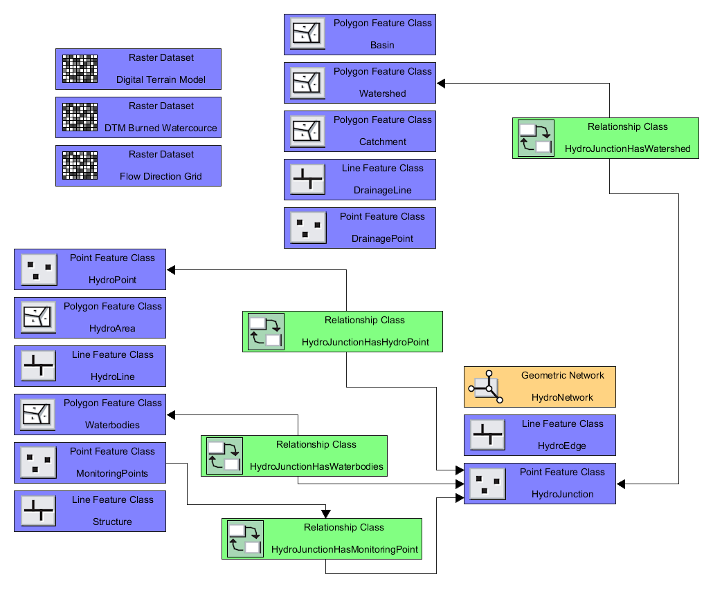

Fleming College Projects
Baxter Creek Watershed Phase Three: Hydrology and 3D Model
The project was created for the Baxter Creek Watershed Alliance during the Fleming client-driven collaborative project. It consists of a hydrological Geodatabase of the Baxter Creek Watershed and a 3D digital twin of the Millbrook settlement area developed for future analysis.
Hydrological Geodatabase Schema
3D Digital Twin

Spongy Moth Southern Ontario Map
The map was created for the Geovisualization I final project. It showcases the damage caused by the spongy moth over the past 20 years.

Queen's University Projects
A Hitchhiker's Guide to Computing Degree Plans
This was the advanced undergraduate project for my Computer Science degree, serving as the final project. My Team created an interactive and customizable web-based course planner. This involved using data scraping techniques and MongoDB to extract course data from the Queen's University website.
Detecting Defoliation
Poster created for the "Remote Sensing of the Environment" course, showcasing how remote sensing can detect defoliation caused by insects.

Northern Expansion of the Blacklegged Tick into Eastern Canada
Poster created for the "Spatial Analysis" course showcasing the northward expansion of the Blacklegged Tick in Eastern Canada and the United States due to anthropogenic climate change.